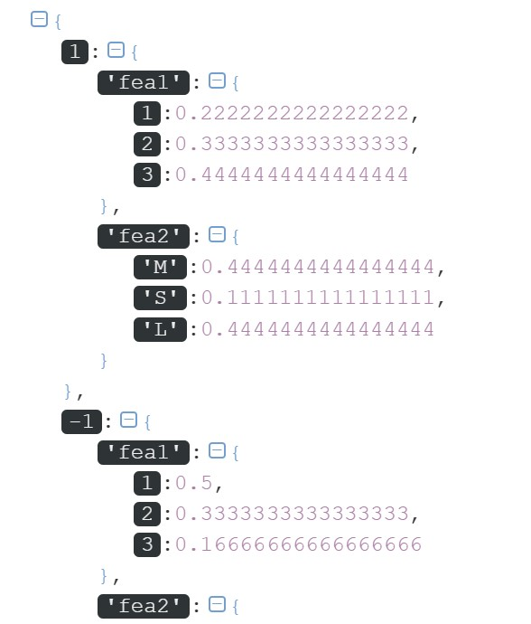

开篇
正如其名，”朴素贝叶斯”原理”朴素”，实现简单，是一种常用的机器学习算法。
为何“朴素”？如何“学习”？如何分类？别急，咱们慢慢道来~
概率统计回忆录
朴素贝叶斯也是贝叶斯方法的一种，提起贝叶斯，学过概率统计的你一定听说过条件概率公式，全概率公式和贝叶斯公式吧，忘记了也没关系，我们先来快速过一遍。
条件概率公式：
$$P(A|B)=\frac{P(A,B)}{P(B)}$$
全概率公式：
$$P(B)=\sum_{i=1}^{n}P(A_i)P(B|A_i)$$
贝叶斯公式:
$$P(A|B)=\frac{P(A,B)}{P(B)}=\frac{P(B|A)P(A)}{ \sum_{i=1}^{n}P(A_i)P(B|A_i)}$$
可以发现，贝叶斯公式其实就是由条件概率公式和全概率公式推导的，贝叶斯公式的分母是一个全概率公式，分子是一个条件概率公式。
后续的推导将会用到上面的公式。
朴素贝叶斯的训练（学习）方法
朴素贝叶斯在使用训练数据进行“学习”时，其实是在学习数据的生成机制，具体点，是在学习特征$X$与标签$Y$的联合概率分布$P(X,Y)$ 。
再进一步解释：根据条件概率公式，$P(X,Y)=P(Y)P(X|Y)$，所以朴素贝叶斯要学习联合概率分布$P(X,Y)$，就需要学习$P(Y)$以及$P(X|Y)$，而这两项完全可以从训练集中学到，于是整个朴素贝叶斯的学习之路就“几乎”被打通啦
之所以用“几乎”，是因为以上过程还存在一个问题：
在$P(X|Y)$中，$Y$是类别标签，假设共$K$类；$X$是特征，假设共$N$个特征${X_1,X_2,…,X_N}$，且$X_i $的可能取值共$S_i$个，$i=1,2,…,N$，那么对于每一个类别标签$c_k,k=1,2,…,K$，$X|Y_j$的不同组合总数达到了 $\prod_{i=1}^{N} S_i$，于是$P(X|Y)$总共需要计算$K\prod_{i=1}^{N}S_i$个参数。当每个特征的不同取值较多时，计算开销会特别大，这在实际应用中是不可行的。
那应该怎么办呢？
可以假设$P(X|Y)$是条件独立的！具体来说就是$P(X|Y)$满足下面的公式：
$$P(X|Y)=P(X^{(1)}=x^{(1)},P(X^{(2)}=x^{(2)},…,P(X^{(N)}=x^{(N})|Y=c_k)=\prod_{i=1}^{N}P(X^{(i)}=x^{(i)}|Y=c_k),k=1,2,…,K$$
此时，对于每一个类别标签$c_k，k=1,2,…,K$，都对应需要计算$S_i$次（第$i$个特征共有$S_i$个不同取值），$i=1,2,…,N$
那么$K$个类别标签与$N$个特征的全部不同组合数为$\sum_{i=1}^{N}S_iK$，也就是说$P(X|Y)$总共需要计算$\sum_{i=1}^{N}S_iK$个参数。
当每个特征的不同取值较多时，$\sum_{i=1}^{N}S_iK$将会远小于$K\prod_{i=1}^{N} S_i$，这样的计算量是可以接受的。
朴素贝叶斯正式基于这一条件独立性假设！
由于这个假设在现实生活中几乎不能被满足，因此说该算法是“朴素”的，这也正是朴素贝叶斯的得名由来。
这样，朴素贝叶斯的学习之路彻底被打通啦！
朴素贝叶斯分类器
上一节介绍了朴素贝叶斯如何利用训练数据进行学习，当学习完成之后，就得到了一个朴素贝叶斯分类器，那如何应用这个分类器做分类呢？让我们来推导一下吧。
在进行分类时，对于给定的样本特征$x=(x^{(1)},x^{(2)},…,x^{(N)})$，朴素贝叶斯分类器会将所有可能的类别作为备选答案，然后分别计算在给定特征的条件下，样本被判定为某类别的概率，最后比较一下这些概率的大小，最大概率对应的的类别就是朴素贝叶斯分类器最终的分类结果。
以上所计算的概率，被称为后验概率，用贝叶斯公式描述如下：
$$P(Y=c_k|X=x)=\frac{P(X=x|Y=c_k)P(Y=c_k)}{\sum_{k=1}^{K}P(X=x|Y=c_k)P(Y=c_k)},k=1,2,…,K$$
前面我们已经利用条件独立性得到
$$P(X=x|Y=c_k)=\prod_{i=1}^{N}P(X^{(i)}=x^{(i)}|Y=c_k),k=1,2,…,K$$
将它代入刚刚推导的$P(Y=c_k|X=x)$中，得到
$$P(Y=c_k|X)=\frac{P(Y=c_k)\prod_{i=1}^{N}P(X^{(i)}=x^{(i)}|Y=c_k)}{\sum_{k=1}^{K}P(Y=c_k)\prod_{i=1}^{N}P(X^{(i)}=x^{(i)}|Y=c_k)},k=1,2,…,K$$
在上式中，分母对于每一个 $c_k$ 都是相同的，因此可以不考虑分母，于是朴素贝叶斯分类器最终的分类结果是 $<!–15–>{n},k=1,2,…,K$$
其中$n$为样本个数。
设第$i$个特征所有可能的取值集合为${a_{i1},a_{i2},…,a_{iS_i}}$，则 $P(X^{(i)}=a_{il}|Y=c_k)，i=1,2,…,N;l=1,2,…,S_i$ 的极大似然估计为：
$$P(X^{(i)}=a_{il}|Y=c_k)=\frac{\sum_{s=1}^{n}I(x_s^{(i)}=a_{il},y_s=c_k)}{\sum_{s=1}^{n}I(y_s=c_k)}$$
其中，$I()$为指示函数
$i=1,2,…,N;l=1,2,…,S_i;k=1,2,…,K$
特征总数为$N$，第$i$个特征共$S_i$个不同取值，总共有$K$个不同类别。
案例实战
训练集如下，希望学习一个朴素贝叶斯分类器，对新的样本$x=(2,S)$进行分类。
|.|1|2|3|4|5|6|7|8|9|10|11|12|13|14|15|
| :–: | :–: | :–: |
|$X^{(1)}$|1|1|1|1|1|2|2|2|2|2|3|3|3|3|3|
|$X^{(2)}$|S|M|M|S|S|S|M|M|L|L|L|M|M|L|L|
|$Y$|-1|-1|1|1|-1|-1|-1|1|1|1|1|1|1|1|-1
根据上面的推导，我们需要计算
$$P(Y=c_k),k=1,2,…,K$$
$$P(X^{(i)}=x^{(i)}|Y=c_k),i=1,2,…,N$$
$K:$总类别数；$N:$总特征数
待分类的样本 x=(2,S) 的类别就是集合 $ {P(Y=c_k)\prod_{i=1}^{N}P(X^{(i)}=x^{(i)}|Y=c_k)} $中最大值对应的类别
使用训练集进行训练，需要计算$K=2$个先验概率和$\sum_{i=1}^{N}S_iK=(3+3)*2=12$个条件概率：
$$P(Y=1)=\frac{9}{15},P(Y=-1)=\frac{6}{15}$$
$$P(X^{(1)}=1|Y=1)=\frac{2}{9},P(X^{(1)}=2|Y=1)=\frac{3}{9},P(X^{(1)}=3|Y=1)=\frac{4}{9}$$
$$P(X^{(2)}=S|Y=1)=\frac{1}{9},P(X^{(2)}=M|Y=1)=\frac{4}{9},P(X^{(2)}=L|Y=1)=\frac{4}{9}$$
$$P(X^{(1)}=1|Y=-1)=\frac{3}{6},P(X^{(1)}=2|Y=-1)=\frac{2}{6},P(X^{(1)}=3|Y=-1)=\frac{1}{6}$$
$$P(X^{(2)}=S|Y=-1)=\frac{3}{6},P(X^{(2)}=M|Y=-1)=\frac{2}{6},P(X^{(2)}=L|Y=-1)=\frac{1}{6}$$
这样就学习完成并得到了一个朴素贝叶斯分类器，接下来开始做分类了。
对于给定的新样本 $x=(2,S)$ ，计算：
$$P(Y=1)P(X^{(1)}=2|Y=1)P(X^{(2)}=S|Y=1)=\frac{9}{15}\frac{3}{9}\frac{1}{9}=\frac{1}{45}$$
$$P(Y=-1)P(X^{(1)}=2|Y=1)P(X^{(2)}=S|Y=-1)=\frac{6}{15}\frac{2}{6}\frac{3}{6}=\frac{1}{15}$$
因为后者较大，所以朴素贝叶斯将会把新样本$x=(2,S)$归到$-1$类中。
Python实现朴素贝叶斯分类器
本小节将用Python实现一个朴素贝叶斯分类器。
我们依然使用上一节栗子中的数据(后台回复”bayes_data”可获取数据)来测试分类器，先读取进来看一下：
1 | data=pd.read_csv('bayes_data.csv') |
输出：
1 | fea1 fea2 label |
现在来实现朴素贝叶斯分类器
1 | class Bayes(): |
整体的思路是：
对于待分类的样本$x$：
计算先验概率$P(Y=c_k),k=1,2,…,K$
计算条件概率$P(X^{(i)}=x^{(i)}|Y=c_k),i=1,2,…,N;k=1,2,…,K$
根据上面二式计算${P(Y=c_k)\prod_{i=1}^{N}P(X^{(i)}=x^{(i)}|Y=c_k)},k=1,2,…,K$，并取其中最大值对应的$c_k$作为样本$x$的类别。
所以我们可以先定义两个方法，分别计算先验概率和条件概率
1 | #计算先验概率 |
cal_prior_prob比较容易实现，只需对类别列统计一下不同取值的个数，然后除以总样本数。注意到“统计某列不同取值的个数”这一操作在后面会被多次使用，因此先把它写成一个单独的方法：
1 | #统计某一列不同取值及其对应个数 |
然后就可以实现cal_prior_prob了：
1 | #计算先验概率 |
cal_cond_prob的实现稍微有些复杂。由于需要计算类别标签取不同值的条件下一系列的概率，因此需要按照类别标签的不同将数据集做划分，我们先来实现数据集划分函数：
1 | #获取不同类别标签下对应的子集 |
代码逻辑很清晰，不必多言。
还有个问题：应该如何存储这一堆计算得到的条件概率呢？
这里，我选择了嵌套的字典。具体的结构是这样的：
1 | {1: {'fea1': {}, 'fea2': {}}, -1: {'fea1': {}, 'fea2': {}}} |
先搭建好这个框架，之后直接往对应位置填充数据即可。
有了以上铺垫，现在来实现cal_cond_prob：
1 | #计算给定类别的条件下，每个特征取不同值的概率,并用字典存起来 |
该方法最后返回的dic就存储了全部的条件概率。
完成以上任务后，可以使用我们的数据集测试一下：
1 | if __name__ == "__main__": |
输出：
1 | 先验概率：[(-1, 0.4), (1, 0.6)] |
从输出结果可以得到先验概率为：
$$P(Y=-1)=0.4$$
$$P(Y=1)=0.6$$
条件概率就没那么直观了，不过我们可以用在线工具https://www.bejson.com/explore/index_new/ 格式化一下：

将之前手算得到的的分数化成小数，与以上输出结果做个比较，你会发现，两者结果是一样的。这说明以上代码没有问题，测试通过。
有了这些用字典存储的条件概率，我们就可以用到哪个取哪个了。
现在“原料”俱齐，是时候实现最终的分类方法啦：
1 | def judge(self,x,all_labels,prior_prob,cond_prob): |
上述方法传入在本地计算好的先验概率、条件概率(字典格式)以及全部类别标签的不同取值，计算${P(Y=c_k)\prod_{i=1}^{N}P(X^{(i)}=x^{(i)}|Y=c_k)},k=1,2,…,K$，最后排序并返回最大值对应的类别标签。
至此，整个朴素贝叶斯分类器就完成了。
试试看$x=(2,S)$会不会和我们之前手推的一样被归到-1类，代码如下
1 | if __name__ == "__main__": |
输出:
1 | 分类结果为： -1 |
嗯，完全一致。
完整代码如下:
1 | import pandas as pd |
总结一下
本文讲解了朴素贝叶斯的由来，学习过程以及分类器的原理，并结合案例加以说明，最后用Python实现了一个基于极大似然估计的朴素贝叶斯分类器。
最最后，原创不易，在看一下好不好
对了，南极Python交流群已经成立，欢迎入群学习交流(划水)


- 本文链接：http://yoursite.com/2021/02/02/%E6%9C%B4%E7%B4%A0%E8%B4%9D%E5%8F%B6%E6%96%AF/
- 版权声明：本博客所有文章除特别声明外，均默认采用 许可协议。